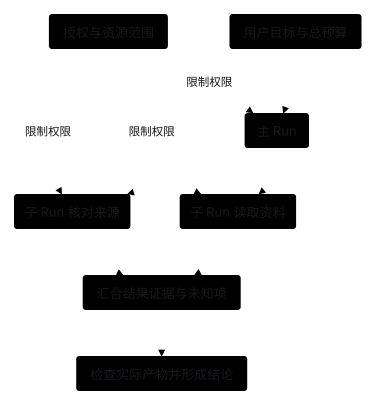

Orchestration: Coordinate Multi-Agent Division of Labor
1. Starting Problem: When Do We Need Multi-Agent Collaboration, and What Must Be Controlled?
When a single task involves extensive independent document searches or specialized verification, cramming everything into a single Agent loop quickly floods the main context window with intermediate exploration noise. Instead, a main Agent can own the overall goal and synthesis while delegating focused search or evidence verification to isolated sub-agents.
Multi-Agent Collaboration: Task Dispatch, Sub-Task Execution & Result Aggregation (Future Design; Current Baseline Is Single-Agent)

- Role prompts do not equal system isolation: Naming a model "Read-Only Reviewer" only affects the prompt—code must explicitly configure each sub-task with its own Run ID, restricted tool subset, token budget, and Policy permissions.
- Distinguish three independent dimensions of isolation: Context isolation (not sharing full message histories), workspace file isolation (not overwriting each other's files), and OS-level sandbox isolation are three distinct concerns that must be enforced separately.
2. Module Collaboration: How Does the Orchestration Layer Coordinate Core Modules?
- Task dispatch (Orchestration → Child Runner): The orchestration layer specifies the input snapshot, completion criteria, budget cap, and allowed toolset for each sub-task; each child Runner uses its own Context and executes via Model, Tools, and Policy.
- Lineage recording & result aggregation (State & Quality): State records parent-child Run relationships, handoff payloads, and execution results; the orchestration layer verifies evidence before merging, optionally passing deliverables to Quality for checking.
- Permission & timeout boundaries: A sub-task's permissions can never exceed its parent task's authorized scope; furthermore, the system must clearly distinguish between "sub-task partially completed," "wait timed out," and "cancellation confirmed" (a parent timing out on its wait does not mean the background child process has stopped).

3. Comparing Core Approaches: 5 Multi-Agent Orchestration Patterns
The 5 patterns below address different collaboration needs and can be adopted on demand (none are implemented yet; Stage 3 uses a single Runner):
A. Subagent as a Tool
- How it works: The main Agent submits a well-bounded sub-task via a tool call; the sub-agent runs inside an isolated context window with a restricted toolset and returns structured findings and evidence citations, while the main Agent remains responsible for synthesis and the final reply.
- Best for: Document search, long-file analysis, and independent code/document review (start by capping delegation depth at 1).
B. Conversational Handoff
- How it works: The active Agent transfers session control directly to another domain-specialist Agent, and subsequent user inputs route directly to the new owner.
- Best for: Customer support triage and multi-domain routing; requires explicitly defining which historical messages, task states, and permissions transfer across the handoff.
C. Explicit Workflow Graph (Graph & Parallel Fan-In)
- How it works: Application code defines nodes (plain functions or Agents), conditional edges, and reducer functions to fix task transitions and parallel fan-in merging rules.
- Best for: Business pipelines with stable stage boundaries and clear dependencies; note that majority voting among models never replaces deterministic deliverable verification.
D. Persistent Sub-Sessions & Async Mailboxes
- How it works: Sub-agents retain persistent IDs and state, receiving follow-up clarifications or instructions via message queues carrying sequence numbers, sender IDs, and wake triggers.
- Best for: Long-lived asynchronous collaboration; requires safeguards so ordinary status notifications do not trigger infinite back-and-forth message loops between models.
E. Shared Task Board & Worker Queue
- How it works: Multiple Workers claim tasks according to dependency graphs, hold time-bounded leases, and submit results while incrementing task revision numbers.
- Best for: High-volume batches of parallelizable sub-tasks; requires solving lock contention, lease expiration, and result conflicts.
| Orchestration Pattern | Who Owns the Final Result | Key State to Persist | Main Implementation Cost |
|---|---|---|---|
| Subagent as a Tool | Main Agent | Sub-task contract, input snapshot & returned evidence | Extra call overhead and handoff verification |
| Handoff | Receiving Agent | Active session ownership & transferred context | Subsequent routing and permission boundary migration |
| Explicit Graph | Application workflow | Node states, edge conditions & reducer rules | Maintaining state schemas and checkpoint recovery |
| Async Mailbox | Defined by task contract | Agent ID, message sequence numbers & wake conditions | Message deduplication, out-of-order handling & loop prevention |
| Shared Task Board | Scheduler & task owner | Task leases, revision numbers & dependency graph | Concurrency lock contention, timeout reassignment & conflict resolution |
4. Open-Source & Industry Orchestration Practices
- OpenAI Agents SDK (Official Docs): Orchestration & Handoffs clearly distinguishes between "Manager invoking sub-agents as tools" and "Handoffs transferring conversation control."
- Deep Agents (Source Verified): subagents.py constructs isolated task inputs for sub-tasks and converts their outputs into tool receipts for the main Agent, cleanly separating isolated windows from forked paths that inherit parent history.
- Claude Code (Official Docs): Its Subagents guide uses isolated context windows and restricted toolsets to contain intermediate exploration, returning only the final summary to the main session.
- AgentScope Java (Official Docs): Its SubAgent design distinguishes workspace modes, synchronous waiting, and background execution while modeling "wait timeout," "execution cancelled," and "task failed" as separate states.
- LangGraph (Official Docs): Graph API uses explicit state schemas, nodes, edges, and Reducer functions to manage multi-node fan-in rather than concatenating free-form natural language replies as a substitute for state merging.
5. Designing the Sub-Task Handoff Contract
To prevent sub-tasks from guessing requirements or the parent task from blindly trusting conclusions, sub-task inputs, budgets, and return values should use an explicit structured contract:
task = {id, parent_run_id, revision, objective, constraints, input_refs}
limits = {deadline, model_calls, token_budget, max_depth}
result = {status, findings, evidence_refs, artifact_refs, checks, uncertainties}
- Intersect permissions: A sub-task may only perform operations allowed by
parent_permissions ∩ child_config—switching roles never escalates permissions. - Deduct from a shared budget: Sub-task model calls and token usage count against the overall task budget, with quotas reserved before parallel dispatch.
- Require executor confirmation on cancel: When a parent task is cancelled or times out, propagate the cancellation signal to child tasks and wait for executor confirmation; record indeterminate states honestly rather than fabricating failure receipts.
6. Isolating Shared Workspaces Under Concurrent Execution
- Read-only tasks share a pinned snapshot: Multiple read-only search or review sub-tasks can safely read the same immutable file snapshot concurrently.
- Write tasks isolate by resource or Git worktree: Concurrent code modifications can run in separate Git worktrees, merging and running end-to-end verification tests during the fan-in stage (note that Git worktrees only isolate working tree files and do not provide OS-level sandbox isolation).
7. Outer Task Scheduling & Long-Horizon Waiting
- Outer triggers: Cron schedules, incoming Webhooks, and durable workflows start or wake a Run when specific events arrive, while the Run itself executes the standard Agent Loop inside.
- Suspend and wake on events: When waiting for human approval or a long-running build, persist the external job ID, wait condition, and deadline and release the worker process; wake and resume only after the external event arrives and passes version and deduplication checks, rather than burning model tokens in a busy-wait polling loop.
8. Current Implementation & Unimplemented Scope
- Implemented (as of Stage 3: Single Agent, Single Runner): Each invocation processes one user task inside a single Runner loop and supports continuing history within the same session (see Stage 3).
- Not Yet Implemented (deferred to Stage 8 On-Demand Extensions): Sub-task delegation tools, Handoffs, explicit Graphs, async mailboxes, shared task boards, and joint parent-child budget enforcement.
9. Expected Outcomes (Future Sub-Task Delegation Exercise)
When introducing multi-agent collaboration in a later stage, start with the simplest pattern: a read-only review_document sub-agent tool with maximum delegation depth 1.
Expected Outcomes:
- Intermediate exploration stays out of the main window: The sub-agent's multi-step file searches stay inside the child context window, while the main Agent receives only a structured issue list, evidence locations, and open uncertainties.
- Strictly bounded permissions and depth: The read-only sub-agent cannot invoke any file-writing tools and cannot recursively spawn deeper sub-tasks.
- Clear distinction of errors and timeouts: When required inputs are missing, a sub-task times out, or the parent task is cancelled, the main flow receives an explicit status rather than mistaking incomplete output for a passing review.
- Quantifiable cost/benefit comparison: Comparing the single-agent baseline against sub-task delegation on the same task suite clearly reports the reduction in main-window tokens alongside changes in total call cost and task accuracy.